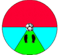

ウォーミングアップ
+ リフティング
ボールの中心はどこ？
何回つけたか、数にこだわる必要はありません。実戦では、３回もできれば十分で、コントロールできていることが大切なのです。そこでボールを追う自分のバランス、 姿勢、動きをよく観察して下さい。そこからサッカーの基本をみずから理解し、実践できるようになります。
ボールはどこへ落ちる？
ボールはどこへ行くかわからない？下に決まっているさ。足跡の位置て自分がリフティングしているイメージを想い浮かべて下さい。緑の部分へは、体が壁になり、ボールはそこへは行きにくいはずです。
ボールを回転させる
軽くバックスピンをかける。足の親指の付け根あたりで、ボールの中心からほんの少し前側をつき（少し前へ押し出すようにすることで蹴った位置へボールが落下する）自分の方に回転させて下さい。こうすることで、ボールはリフティングサークルの赤い部分には飛びにくくなります。少し楽しくなってきましたか？
- こすり上げるような動作で、自分の足もとに落ちるボールのコントロールが楽にできるようになります。
- ボールに回転を与えることで、落下速度が上がり、同じ時間でもタッチ数が増えます。
- 強く、速くボールを蹴っても、その力を回転力に変えてしまえばボールは、大きく弾みません。ドリブルする速度と同じくらいの速さで、移動しながらリフティングできるようになります。
- 足の指を意識して使うと、手のひらでボールを突くような感覚でできるようになります。足の指を使うことが大切です。スパイクは、足の指が動くくらいの余裕も必要です。
+ パスと軸足
サッカーは、パスゲーム
ゲーム中あなたは、インサイドキックで見方へパスを出そうという状況です。右足でけることが多い？それとも考えた事がない？右足と左足を使い分けることで相手がボールにタックルできたり、できなかったりするのです。あなたはどちらの足でボールを蹴る？
相手とボールの間に、軸足の壁を作る
ボールと敵の間に体を入れることは、大切な技術です。ボールを巧みに操るだけではなく、ボールに回り込むことで、相手は、簡単にタックルできなくなります。ですから、左へパスを出すときは、左足で。右へパスを出すときは、右足でパスを出すことで、プレーに時間的余裕もできます。逆に、左へパスするのに右足で蹴るとどうでしょうか？相手にタックルされなければ問題は起きないかもしれない、しかし相手にボールをさらしている状態ですから、相手次第で時間的余裕はなくなり、一発逆転のピンチにもなります。
右足でも左足でも
どちらの足でもボールをキックできなくてはなりません。利き足でしかキックをしないのは不利です。自分と相手、ボールの関係を注意深く観察して下さい。瞬発力など個人差はありますが、人の動き自体には大差ありません。イメージと実際のギャップが埋まるまでは、あきらめてはいけません。
+ ステップとバランス
自分の重心はどこ？
ボールに駆け寄って行く時、足を交互に出します。片方の足を上げたとき、ボールを持った選手が、軸足の横にボールを蹴ったら、あなたならそのボールにどう反応するでしょうか？両足が地面に着いているとき、これから足を上げようとしているとき、着地しようとしているときなど、次の動作に移るまでには、時間がかかります
相手の逆を突く動きとは？
 相手が向かってくる方向とは逆に進むことですが、図の様に１対１の場面で、相手が右斜めから寄ってきて、右足を上げた時、相手の左足、つまり軸足に向かう動きを言います。日本人は、右ききの選手が多く、右足でボールにタックルすることが多い。とっさの時、相手の右側へ行くことで、かわし易かったりします。相手は左足でクリアする場面も増えるので、右足より弱いキックになったり正確性も欠け易く、チャンスが続く可能性も高くなるのです。
相手が向かってくる方向とは逆に進むことですが、図の様に１対１の場面で、相手が右斜めから寄ってきて、右足を上げた時、相手の左足、つまり軸足に向かう動きを言います。日本人は、右ききの選手が多く、右足でボールにタックルすることが多い。とっさの時、相手の右側へ行くことで、かわし易かったりします。相手は左足でクリアする場面も増えるので、右足より弱いキックになったり正確性も欠け易く、チャンスが続く可能性も高くなるのです。
相手のステップに気をくばろう？
相手の動く方向、重心のかかっている足、つま先の向きから、次の行動を判断するのです。『そんなことできないよぉ～』なんてやってみる前に弱音は吐かないでね。カッコ良く相手をかわすシーンは、こんなところからはじまるのです。『相手や自分の動きをよく見る事』ボールと自分自身との対話が必要です。
+ ターン
+ アイコンタクト
ボールを受ける直前の状況
パスが届く間にプレッシャーをかけられたり、インターセプトされる状況があります。見方のパスが出た時に、ボールのコースやスピードを判断し、走りながらでも自分の背後を見渡すことが必要です。そしてボールを受ける前にどこへトラップすべきか判断します。
何をすべきか判断のつかない時
そんな状況では、お決まりの動作を考えておくことも重要です。 ペナルティーエリア内ならゴールにより遠い位置へボールを運ぶべきでしょうし、近くに見方がいれば早くパスを出すべきです。ドリブルして状況を判断していては、近くの見方へのマークは厳しくなります。
近くほど難しい？
ボールを速く、遠く、正確に運べたらそれは確かに良いことです。しかしロングパスは、相手に判断する時間を与えてしまうのです。ショートパスはプレーヤーが判断する時間的余裕も短いですが、適もこの動きの変化に合わせて対応する必要があります。狭いスペースですが、ミスを増やしたくはありません。自分がイメージする展開を、話し合いながら、プレーしてみましょう。息の合ったアイコンタクトができるようになるでしょう。
+ コーチング
２人の選手から違う指示がでたら？
周りの状況がつかめていない時でも、次の行動を決めなければなりません。コーチングを判断するにも、状況に応じた決まりがあります。ゴールに向かって後（守備側）の選手の声を優先する。後の人はグランド全体の状況を見渡しやすいが、前の選手は、後ろと前の両方を見なくてはいけません。それに後の選手が誤った指示をしてボールを奪われたら、守るのは後の選手です。
どんな時に声を出すべきか
アイコンタクトは互いに状況を確認しながら、次の動作を連絡し合う手段です。コーチングはゲームの流れや状況が判断できない状況になっている選手やまわりを見ることができない状況の選手にまわりの状況を伝えるための手段です。
ワンサイドカット
守備で相手を組織的に追い込むために行われるのがワンサイドカットです。ボールに近い選手は、タックルに行くべきか、相手をどちらへ追い込むべきか判断出来ない場合があります。こんな時、後の選手のコーチングで連携を取ることができます。①では前方の守備側選手に『左カット』を指示します。②では右カットを指示し、左へ行くようにプレッシャーをかけます。味方選手にはマークする選手がいます。③で１対１で左へ進もうとすれば守備側の選手は右カットで守備しているので守備側選手が有利です。この様に、相手にプレッシャーをかけ、ドリブルやパスを誘ってボールを奪うためのチャンスを増やします。
目や声以外のコンタクト（手も使う）
ボールを受ける際に適が背後からボールを奪いに激しくチャージしたり、プレッシャーをかけてくることがあります。こんな時は両手を下から後へ伸ばし、触角のように使うのです。決して相手のユニホームを引っ張ったり、手で妨害するのではありません。相手が後右側からくるのか逆か容易に判断できますからその逆側へ振り向けば簡単に相手をかわすことができます。
+ ポストプレー
ワンツー
周りの状況がつかめていない時でも、次の行動を決めなければなりません。コーチングを判断するにも、状況に応じた決まりがあります。ゴールに向かって後（守備側）の選手の声を優先する。後の人はグランド全体の状況を見渡しやすいが、前の選手は、後ろと前の両方を見なくてはいけません。それに後の選手が誤った指示をしてボールを奪われたら、守るのは後の選手です。
フィールドの内側がポスト
アイコンタクトは互いに状況を確認しながら、次の動作を連絡し合う手段です。コーチングはゲームの流れや状況が判断できない状況になっている選手やまわりを見ることができない状況の選手にまわりの状況を伝えるための手段です。
フィールドの外側がポストプレーは危険
②では、守備側の選手は、足を伸ばしてカットしやすいポジションが取れます。また、パスがカットされた場合、②のタッチライン側選手は適の後方に位置してしまいます。①ではタッチライン側に蹴り出そうとしたボールがカットされても、まだ自分で守備ができるポジションです。外側へのパスは思いきって出せる上、敵の守備も手薄になる場所です。
+ ワンツー
相手選手を引きつけてボールを出す
ゆっくりとした動作でもパスを出して２～３歩走るだけで相手をかわせてしまうのです。ですが、相手を引きつけるわけですから、当然危険も増えます。確実なプレーをする配慮が必要です。また、これは味方へワンツーをする合図になります。
フィールド内側の選手がポストプレーヤーになる
ディフェンスは、相手とゴールを直線で結んだ線上に位置する
から、①ではポストになる選手は走る選手の前へ大きくパスが出せます。受け手の選手も前には敵がいないのでトラップしやすい。（相手とゴールを直線で結んだ線上だから右斜め前になる）
タッチライン側の選手がポストプレー
②では守備側選手の人数も多く、精度の良いパスが要求されますし、受け手の選手はセンターバックとボールにはさまれるポジションになので、高度な技術が要求されます。
敵の反撃する速さにも違いが出る
①が敵を外側へ引きつけて攻撃するのに対し、②はスピード勝負といったところでしょうか、ミスなどで敵にボールが奪われる展開も速くなるわけです。せっかくボールを奪ってもすぐ反撃されて、へとへとになるゲーム展開を経験したことはありませんか？９０分を闘い抜くには、状況に応じて攻撃の仕方を変える必要があります。
+ パス＆ゴー
少しでも速く走る
パスを出して走る。その動作を注意深く観察して下さい。例えば、キックするフォームを小さくして走るスピードをなるべく落とさない様にする。ステップ数に注意してみると、キックした足を一旦戻して地面に付くのではスピードは落ちます。キックした足をそのまま前へ振りぬいて走ってみましょう。先の例より先に２歩前へ進めます。
相手を抜き去る
①では、相手により近づきながら、ボールは相手に遠い位置でキックしています。キックした足をそのまま振りぬいて９０度回転し、前へ踏み出すことで、相手に並んだ位置まで到達します。相手は、ターンしてついてこなければならない不利な状況です。まして、出されたパスに気を取られるようでは、完全に抜き去られてしまいます。
右と左ではどう違う？
②では、相手にボールをさらした状態ですから、あまり近づいてパスはできません。キックの後に、右斜めに進もうとするなら、キックした足を一旦引いて、軸足にし、逆足で１歩前へ進むことになるので、歩数で１歩半遅くなります。
+ ワンツーリターン
後方へ下がる
ワンツーではフィールド内側の選手がポストプレーヤーになるのが基本と説明しましたが、選手は常に移動していますから、常にこの様なプレーはできません。そこで戦術をひと工夫します。
オープンスペースをつくる
タッチライン側の選手が前方に位置します。このままワンツーを行えば、タッチライン側選手がポストプレーヤーになってしまいます。そこでパスを受ける選手はボールを迎えに行き後方へトラップします。これで、お互いの位置が素早く逆転します。そして敵の選手を引き付けることで前方にオープンスペースを作り、ワンツーを行います。
過酷ではあるけれど
確実な組み立てができます。自分も大変だけど、相手だって同じです。過酷なプレーを敵にもしてもらいましょう。タッチライン側に位置する選手は将棋の香車のようですね。
+ 数的優位の保ち方
数的優位とは？
局面で、相手より人数の多い状況を言います。①は、３対２の状況ですが、②では、後方の攻撃側選手が、見方の選手に近づくことで、右端の守備選手の視野に入り、１対２の状況が生まれます。このように、スペースを縮めることで、数的優位を作ることができます。
数的優位を得る
数的優位を保つために、タッチライン側の選手は常に、ワンツーを仕掛けられるポジションを取ることが大切です。
- 相手を引き付けてパスを出す。
- パスがつながるか判断した上で前に出る。
- 数的優位を得るポジションを取る。
１対１なら勝負を賭ける
⑥では、ペナルティエリア(ゴール前）で、１対１になっています。勝負を賭けてかまわないポジションですが、右側の選手が走り込もうとしています。ここで、１対１で負けたなら、前の選手は、取り残されてしまいます。パスを出して、さらに前線で１対１をすれば、パスを出した選手は、守備的ポジションの役割も果たせます。ドリブルは最後の手段です。
+ インステップキック
ボールの中心は？
 ボールの中心は、１０円玉ぐらいの大きさです。ボールをしっかりと見ることが大切です。短期間に正確なキックを身につけたいのなら、野球選手が、バットで素振りをする様に、キックの素振りをすることです。膝から下のコンパクトなスィングで、ボールの直前、スィングを止める練習と、大腿部からの大きなスィングで振り切る２つの練習しましょう。
ボールの中心は、１０円玉ぐらいの大きさです。ボールをしっかりと見ることが大切です。短期間に正確なキックを身につけたいのなら、野球選手が、バットで素振りをする様に、キックの素振りをすることです。膝から下のコンパクトなスィングで、ボールの直前、スィングを止める練習と、大腿部からの大きなスィングで振り切る２つの練習しましょう。
自分自身と対話する
素振りをすることで、バランスよく、スムースな動作が身に付きますから、どこに力を入れれば良いかがわかってきます。注意する点は、
- 軸足ひざの屈伸でキック力が増す。
- 軸足は、かかとから踏み込む。
- 軸足のつま先方向のスイングが一番、力が入る。
スピードに乗っているときには、素早くボールに寄り、力まず走り抜けるように振り切ります。
+ 守備のポジション
敵とゴール
最終的にはゴールを狙うのがサッカーです。
相手の動きがつかめなくても、
ゴールと相手を結ぶ直線上に立つことです。そのためには、
ゲームの流れ、ボールの動きと共に、自分のマークすべき相手の顔と背番号、ゴールの位置を常に確認することが必要です。
+ マーキング
ポジション
１１人で戦うゲームですが、基本的に１人の攻撃選手に対し、１人の守備選手がマークします。もちろんポジションは、ゴールと相手を結ぶ直線上に立つです。まずは、自分がマークする選手の顔と背番号は、試合開始後５分以内に覚えて下さい。
プレッシャー
マークすることで相手にプレッシャーをかけます。攻撃する選手は前方の敵と後ろからくるボールの両方を意識して行動しますが、守備側の選手は前方に重点を置いてプレーできれば有利です。相手にプレッシャーを与えるには、相手がトラップする瞬間の動作に対応できる位置にいなくては、相手に対しマークしていることにはなりません。
相手の動きに合わせて並んで走る
マークしながらプレッシャーをかけ続ける『一発で当たるな！』なんて、プレー中に声をかけられたことはありませんか？マークを離しすぎるとせっかく急いで駆け寄ったのに一発でかわされ易いのです。走り抜かれないように相手の進む方向に自分の体を入れて並走することです。ボールと相手の選手との間に入ることができればボールを奪ったも同然です。
+ インサイドキック
インサイドキック
蹴る方向に対し、ボールの横に軸足をかかとから踏み込んでボールを蹴る方向につま先を向け①、蹴るときボールから目を離さないようにして蹴り足②は、軸足に対し直角にし、ややつま先を上に上げるようにして足首を固定し、くるぶしから足踏まずあたりの側面でボールを蹴り出します。ボールの中心から下へこすり落とすようにして逆回転を与えボールを弾ませないで見方選手のコントロールしやすい玉を出すこともできます。
強く正確に
基本はインステップキックの項でも述べましたが、インサイドキックの特徴は強く正確に蹴ることができることです。競技中、敵は甘いパスをカットするすきを狙っています。強く正確に蹴ることができれば、タイミングをかわして攻撃を組み立てる技になるのです。体勢を崩しても、蹴りかたが不自然であってもボールの中心を蹴れば、ボールは飛びます。それでも激しい競技中にバランスを保つことは、さらに良いプレーを生む秘訣です。
- 軸足のひざは深く屈伸するのでボールを蹴るタイミングの変化が付けやすい。他のキックとの共通性も高く、バランスも保ちやすい。
- バランスが保てると、正確なコントロールも身につきます。etc…
+ トラップ
ボールを止める
- ボールに触れる部位を引いて衝撃を和らげる。
- 地面などを利用して狭角を作り挟み込む。
次は何をする?
立ち止まった状態で足元にボールを止める。ボールに駆け寄ってドリブルする。次の動作をイメージできれば、どこへボールをコントロールしたら良いかわかるでしょう。自分でマスターしたい技術が何かを考えてみましょう。
走りながらトラップ
 いきよいよく転がるボールに走り込んでボールを前に押し出してコントロールできれば次の動作も早くなり、次の動作がキックなら自分のスピードを殺さずに正確に蹴り出せる。
いきよいよく転がるボールに走り込んでボールを前に押し出してコントロールできれば次の動作も早くなり、次の動作がキックなら自分のスピードを殺さずに正確に蹴り出せる。
- ボールを良く見る。
- 正確にコントロールするに足はインサイドを使う。
- ボールにタッチする瞬間、足を引いて衝撃を吸収する。
- ボールの少々上をたたきつけ押し出す。


さあ！もてる力を呼び覚ませ！汗を流せばビールが美味い。(^_^)v